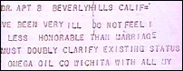

CHAPTER
THREE
Wichita
Don Purcell was a self-made millionaire. He offered
Hubbard funds and new premises in Wichita, Kansas. He also offered to pay the debts of the
original Foundation, without realizing what he was letting himself in for. The paltry
assets of the Elizabeth Foundation, some second-hand furniture and a lot of files, were
moved to Wichita. The remaining Foundations were closed. Hubbard, who had been in Cuba for
about a month, was in poor health, as his ulcer was flaring up. Purcell sent a plane and a
nurse to bring Hubbard and Alexis back to the United States. They arrived in mid-April.
The use of the name "Dianetics" was assigned to the new Wichita Foundation, and
it was to retain the rights of Hubbard books it published. Purcell was the President, and
Hubbard the Vice-President and Chairman of the Board. A few days after his return to the
U.S. Sara, not knowing his whereabouts, filed for divorce. 1
 Hubbard felt so confident of his change of
fortunes that he telegrammed a proposal of marriage (right) to his Los Angeles
girlfriend. Then in June he filed for divorce in Wichita, and negotiated a settlement with
Sara. Alexis was returned to her mother, who had not seen her baby for over three months.
In return, Sara dropped her Los Angeles suit, abandoned any claim to the million dollars
that she said the Foundations had earned in its first year, instead accepting $200 per
month for the support of Alexis. She also signed a retraction:
I, Sara Northrup Hubbard, do hereby state
that the things I have said about L. Ron Hubbard in courts and the public prints have been
grossly exaggerated or entirely false. I have not at any time believed otherwise than that
L. Ron Hubbard was a fine and brilliant man.
I make this statement of my own free will for
I have begun to realize that what I have done may have injured the science of Dianetics,
which in my studied opinion may be the only hope of sanity in future generations. I was
under enormous stress and my advisers insisted it was necessary for me to carry through as
I have done.
There is no other reason for this statement
than my own wish to make atonement for the damage I may have done. In the future I wish to
lead a quiet and orderly existence with my little girl far away from the enturbulating
influences which have ruined my marriage.
The retraction is clearly Hubbard's work (even
containing his invented word "enturbulating"), which Sara has confirmed. 2 Sara remarried, and has largely evaded interviewers ever since.
In 1972, she broke silence to write to author Paulette Cooper. In that letter, Sara
described L. Ron Hubbard, the "fine and brilliant man," as a dangerous lunatic.
She explained that her own life had been transformed when she left him, but that she was
still frightened both of him and of his followers.
June 1951 brought a major change in Hubbard's
fortunes. His divorce was made final, and his book Science of Survival was
published by the new Wichita Hubbard Dianetic Foundation. The title was coined to appeal
to readers of Korzybski's highly popular Science and Sanity. Korzybski was even
acknowledged in Hubbard's new book. The size of the first edition, 1,250 copies, is
evidence of Hubbard's decreasing popularity. He later blamed poor sales on Purcell. 3 The book elaborated the theories of Dianetics: The Modern
Science of Mental Health in relation to Hubbard's "Tone Scale," gave
variations on earlier Dianetics techniques, and made yet more claims for the miraculous
properties of auditing.
In Science of Survival, Hubbard asserted that
an individual's emotional condition, or "tone level," is the key to the
interpretation of his personality. The purpose of Dianetics was to raise the individual's
tone level to Enthusiasm. In Dianetics: The Modern Science of Mental Health the
Tone Scale was divided into four numbered "zones": from Apathy to Fear, from
Fear to Antagonism, from Antagonism to Conservatism, and on to Enthusiasm.
In Science of Survival, the Tone Scale was
laid out in far more detail. Death was below Apathy at Tone 0; Grief at 0.5; Fear at 1.0;
Covert Hostility at 1.1; Anger at 1.5; Antagonism at 2.0; Boredom at 2.5; Conservatism at
3.0; Cheerfulness at 3.5; and Enthusiasm at 4.0. The numbering was arbitrary, but Hubbard
would continue to speak of an enthusiastic person as a "Tone 4," and the wolf in
sheep's clothing, or covertly hostile individual, is still called a "1.1" (or
"one-one") by Scientologists.
The new book was accompanied by a large fold-out
"Hubbard Chart of Human Evaluation," with forty-three columns, each relating to
a particular trait, from "Psychiatric range" to "Actual worth to
Society," all related to "emotional tone level." By knowing someone's
emotional level, Hubbard claimed you would know their physiological condition, and be able
to predict their behavior. An Enthusiastic person will be "near accident-proof"
and "nearly immune to bacteria." An Antagonistic person will suffer "severe
sporadic illnesses,'' and a Frightened person will suffer from "endocrine and nervous
illnesses." An Enthusiastic person will have a "high concept of truth,"
while a Bored person is "Insincere. Careless of facts," and an Angry person,
engages in "blatant and destructive lying."
Hubbard also expounded upon the idea of A.R.C., which
was to become central to Scientology. He asserted that Affinity, Reality and Communication
are inextricably linked, and dubbed them the ARC triangle. The increase or decrease of one
of the comers of this triangle would influence the other two by the same amount. Reality,
according to Hubbard, was fundamentally agreement. In its eventual formulation, Affinity,
Reality and Communication were said to equal understanding.
In Science of Survival, Hubbard referred to
the exploration of "past lives." If the "pre-clear" offered a
"past life incident," the Auditor should simply "run" him through it.
Hubbard complained that Elizabeth Foundation Directors "sought to pass a resolution
banning the entire subject" of "past lives." However, several Auditors
trained at Elizabeth ran "past lives" on Preclears there and say it was Hubbard
who was slow to adopt the idea. Eventually Hubbard adopted it with gusto and "past
lives" became a focus of Scientology. Although reincarnation was a commonplace idea
in the West by this time, Hubbard had undoubtedly met the notion in the works of Aleister
Crowley, who also preferred the expression "past lives" to
"reincarnation."
In the new book Hubbard also advanced his
"theta-MEST" theory. MEST stands for "Matter, Energy, Space and Time"
- the physical world. By this time Hubbard asserted that "MEST" and
that which animates it are two very different things. He used the Greek letter
"theta" to categorize "thought, life force, elan vital, the spirit, the
soul." Hubbard described the relationship between "theta" and
"MEST"'
Consider that theta in its native state is
pure reason or at least pure potential reason. Consider that MEST in its native state is
simply the chaotic physical universe, its chemicals and energies active in space and time.
The cycle of existence for theta consists of
a disorganized and painful smash into MEST and then a withdrawal with a knowledge of some
of the laws of MEST, to come back and smash into MEST again.
MEST could be considered to be under
onslaught by theta. Theta could be considered to have as one of its missions, and its only
mission where MEST is concerned, the conquest of the physical universe.
The Dianetic movement in 1951 consisted mainly of
small autonomous groups, many of which had rejected Hubbard's leadership after the
collapse of the Elizabeth Foundation with the ensuing bad press. There were a number of
newsletters in circulation, some openly hostile to Hubbard. There was an air of
experimentation. Helen O'Brien, who attended, wrote "Audiences at Hubbard's lectures
were always partly composed of oddly dynamic fringe characters who were known to us as
'squirrels'.... They practically never enrolled at a dianetic foundation, seeming to obey
some unwritten law which prohibited them from supporting an organization acting in
Hubbard's interest. Nevertheless, his ideas dominated their lives."
At the Wichita Foundation, Hubbard's only duties
consisted of giving weekly lectures, and signing students' certificates which were awarded
for time spent studying rather than as the result of any examination.
The price of the Dianetic Auditor course remained at
$500, but there were far less takers than there had been in Los Angeles six months before.
Only 112 people attended the first major conference held at Wichita. They were the
remaining core of the Dianetic movement.
Small editions of new Hubbard books and pamphlets
poured out of the Wichita Foundation: Preventative Dianetics, Self Analysis,
Education and the Auditor, A Synthesis of Processing Techniques, The
Dianetics Axioms, Child Dianetics, Advanced Procedure and Axioms, Lectures
on Effort Processing, Handbook for Preclears, and Dianetics the Original
Thesis were all published in the last six months of 1951.
By October 1951, Hubbard attracted only fifty-one
students to a brief series of lectures. In December, he held a convention for
Dianeticists, and, according to O'Brien, felt betrayed when none of his old Elizabeth
colleagues showed up. The men who had helped to make Dianetics a nationwide movement had
deserted him. Winter, who had lent the air of medical authority; Morgan, the lawyer who
had incorporated the first Foundation; Ceppos, the publisher who had unleashed Dianetics:
The Modern Science of Mental Health on the world; and, most important, Campbell,
Hubbard's first recruiter and greatest publicist, who had virtually created the Dianetics
boom. Winter had even written a book which, although it defended Dianetics, attacked
Hubbard. Ceppos had published Winter's book.
The first major challenge to Hubbard's leadership came
in January 1952. A Minneapolis dianeticist, Ron Howes, was declared "Clear" by
his Auditor, Perry Chapdelaine. 4 Remarkable claims were made for, and by, Howes including his
statement that he was seeing if he could grow new teeth. To many dianeticists Howes seemed
proof of Hubbard's claims. Unfortunately for Hubbard, Howes set up on his own, and
attracted a following for his "Institute of Humanics." 5 More desertions from the Hubbard camp followed. In an effort
to raise money, Hubbard launched "Allied Scientists of the World," the name of
the organization which had figured in his first post-war novel, The End Is Not Yet.
From its headquarters in Denver, Colorado, Allied Scientists solicited donations from
scientists. Some of the scientists approached were working on secret government projects,
and the Justice Department took a keen interest in the approach. Long hours were demanded
of the Foundation's lawyer to sort out the ensuing problems. 6
Unsurprisingly, Hubbard and Purcell had a falling out.
At Wichita, Hubbard had joined the "past lives" faction. This leap of attitude
from a supposed precision study of the mind to a spiritual practice aggravated the
conservative Purcell. Purcell had also initially failed to realize that the Wichita
Foundation would be treated as the legal successor to the Elizabeth Foundation, and would
therefore be forced to settle Elizabeth's extensive debts, which ran into hundreds of
thousands of dollars. Purcell tried to persuade Hubbard to put the Wichita Foundation into
voluntary bankruptcy. Hubbard refused, but in February, after creditors had threatened
receivership, he resigned.
He sold his seventy percent holding to the Foundation
for $1.00, and was granted permission to teach Dianetics. He opened the "Hubbard
College" on the other side of town, leaving Purcell the complicated task of settling
accounts. The Foundation filed for voluntary bankruptcy. 7
On the same day, Hubbard sent a telegram to Purcell
informing him that he was filing two suits against Purcell for a total of $1 million.
Hubbard then published an attack on Purcell, accusing him of bad faith and incompetence.
Despite this, the Foundation sent a moderate and matter-of-fact account of events to their
members. No one was blamed. The report included a simple record of income and expenditure,
showing that the Foundation had earned $141,821, of which $21,945 had been paid to
Hubbard. The Foundation had overspent by $63,222 in less than a year of operation. Hubbard
launched an out-and-out attack on the Foundation using its mailing lists, which he had
misappropriated, and claiming Purcell had been paid $500,000 by the American Medical
Association to wreck Dianetics. 8
In March, a restraining order was put on Hubbard and
his lieutenant, James Elliot, requiring that they return the mailing lists, the address
plates, tapes of Hubbard's lectures, typewriters, sound-recorders, sound-transcribers and
other equipment which had disappeared from the Wichita Foundation. Elliot admitted having
"inadvertently" removed this immense haul from the Foundation. When they were
eventually returned, in compliance with a court order, some of the master tapes of Hubbard
lectures had been mutilated. 9
The Court auctioned the Foundation's assets, freeing
it from debt. Purcell bought the assets outright for $6,124; Hubbard had left the sinking
ship a little too hastily. The battle between Hubbard and Purcell continued throughout
1952, with attacks and counterattacks being sent to everyone on the Wichita Foundation
mailing list. Purcell distributed the record of the bankruptcy hearings. Hubbard sent out
a statement insulting those who had chosen to remain with the official Foundation. He
accused them of emotional inadequacy and intellectual shallowness, saying that they
obviously preferred shams to the genuine article. Using the tone of a spoiled child in a
tantrum, he grieved about his isolation, his unswerving devotion and his unselfishness.
Yet again, he claimed to have new techniques which would solve the ills of mankind. 10
Hubbard also sent out increasingly desperate pleas for
funds. For the first time he introduced the ploy of steadily escalating prices. Would-be
franchise holders could buy a package of tapes and books, along with the right to use and
teach his methods, for $1,000. Soon the price would rise to $1,500, then $2,000 and
finally $5,000 within three months. Hubbard outlined the goal of his new organization
thus: "Bluntly, we are out to replace medicine in the next three years." He also
promised "degrees" in Dianetics. 11
When the fundraising efforts failed, Hubbard's chief
lieutenant, James Elliot, sent out an impassioned plea to Dianeticists: "Dianetics
and Mr. Hubbard have been dealt a blow from which they cannot recover .... Somehow Mr.
Hubbard must get funds to keep Dianetics from being closed down everywhere .... He is
penniless." Elliot went on to solicit funds for a "free school in Phoenix for
the rehabilitation of auditors" and for "free schools across America,"
saying that Hubbard would "no longer commercialize Dianetics as organizations have
made him do." Elliot asked for $25.00 per reader. Donors would be called the
"Golds." A month after the announcement of the "free school," Hubbard
was advertising counselling at $800 per twenty-five hours. 12
For six weeks after deserting the Wichita Foundation,
Hubbard tried to establish his rival Hubbard College. In this short time, Hubbard gave a
series of lectures that changed the whole complexion of Dianetics. He demonstrated the
"Electro-psychometer" (or "E-meter"), which later became an integral
part of auditing. He talked openly about matters which in later years became the secret
"OT" levels, and started to favor the word Scientology.
FOOTNOTES
Additional sources: Helen
O'Brien, Dianetics in Limbo (Whitmore, Philadelphia, 1966); author's
correspondence with a former HDRF director; Russell Miller interviews with Barbara
Klowdan, Los Angeles, 28 July-5 August 1986; Hubbard letters and telegrams to Barbara
Klowdan; author's interview with a former executive of various Hubbard organizations;
information on publications and conference attendance - What Is Scientology?
(1978 ed.) pp.289-290; Technical Bulletins of Dianetics & Scientology vol.1,
pp.122-3 & 165
1. Hubbard Dianetic
Foundation, Inc., bankruptcy proceedings, District Court, Wichita, no.379-B-2; Don Purcell
circular letter, 21 May 1952.
2. Corydon, L. Ron
Hubbard: Messiah or Madman? (Lyle Stuart, New Jersey, 1987), p.285.
3. Hubbard circular letter,
20 February 1952.
4. Letter to the author from
Chapdelaine, 1984.
5. Wallis, The Road to
Total Freedom, pp. 84-5.
6. Hubbard circular letter,
20 February 1952.
7. "A Factual Report of
the Hubbard Dianetic Foundation," John Maloney, 23 February 1952; Dianetic
Auditor's Bulletin vol.3; Hubbard circular letter, 28 February 1952.
8. Purcell circular letter 21
May 1952; "Dianetics Today" newsletter, January 1954; Hubbard circular letter 20
February 1952; Hubbard College Lecture no.21 "Anatomy of the Theta Body," March
1952.
9. Jack Maloney circular
letter, 29 March 1952.
10. "The Dispatch
Case," Hubbard circular letter 8 April 1952.
11. Hubbard College Reports,
13 March 1952.
12. Elliot circular letter,
21 April 1952; Hubbard circular letter, 25 April 1952; Hubbard circular letter, 21 May
1952. |